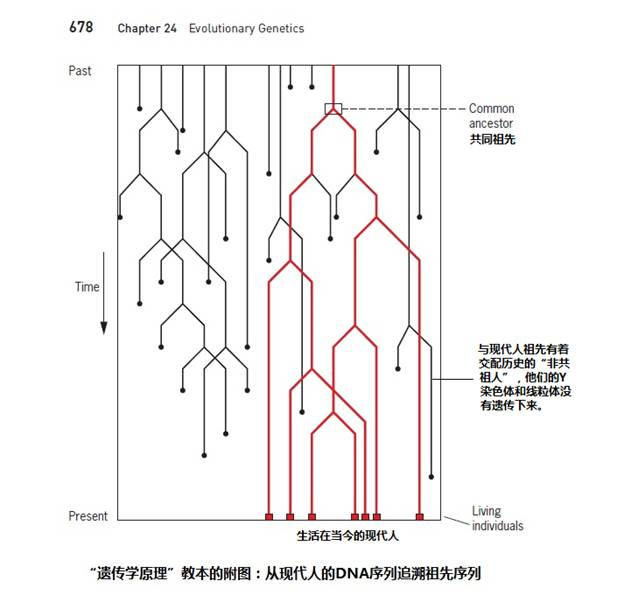

|
第4小节 唯一的一对父母—科学亚当和科学夏娃
一．从现代人的DNA序列去追寻祖先的DNA序列
经过近20年的争论，有些遗传学领域的学者，终于对分子人类学的研究成果给予了承认。著名的遗传学家，明尼苏达大学（University of Minnesota）教授，斯纳司塔德(D.Peter Snustad)和西蒙斯(Michael J.Simmons)在他们的“遗传学原理”书中的最后两页说：“通过分析现在活着的个体的序列，追逆到萌生所有存在序列的祖先序列是可能的。这条祖先序列就代表了一个点，这一点就是所有现存个体的血统都交汇到的一个个体——他们所有的共同祖先。” 、“于是，交汇定率（coalescent
principle）说明所有现代人类不论从母系还是父系都是由生活在100,000至200,000年前的共同祖先传下来的。”（见: 遗传学原理 “Principles of
Genetics”,斯纳司塔德(D.Peter Snustad)、西蒙斯(Michael J.Simmons)著。中文版第698页，英文版 P757）。
（这是北美较流行的一本优秀的遗传学入门教材， University of Minnesota, UCLA, Georgia State
University, State University of New York- Buffalo, University of Maryland，Penn State University, University of Michigan 等大学均使用本教材。）
他们明确地说，从“现在活着的个体的序列” ，追逆出了现代人的“共同祖先”。这里的“个体的序列”，在Y染色体上，显然就是“亚当标记”，那个包含在ZFY基因中的729个DNA编码。在线粒体DNA上，就是“夏娃标记”，那“串”线粒体夏娃的“项链”，也就是那16569个原始的线粒体DNA编码。“共同祖先”就是Y染色体亚当、线粒体夏娃。

图2-18 “遗传学原理”教科书的附图：从现代人的DNA序列追溯祖先序列
二. Y染色体亚当和线粒体夏娃理论下的疑问
不过，在上述有“十几万年前共同祖先”这个共识之下，仍然存在着一些需要回答的疑问。在书中的同一页中，接下来说“然而这些结果并不表示这两个人就是在那遥远年代唯一活着的人。几乎可以肯定，有许多其他人也生活在那个年代。”( This result does not imply, however, that these
common ancestors were the only two people alive at that remote time.
Certainly many others were alive too.)，那些人的Y染色体和线粒体没有遗传下来，“只是灭绝了而已”（Their genetic lineages—mitochondrial
in the case of females and Y chromosomal in the case of males—simply became extinct.），而这两个人是“够幸运的了”( were lucky enough)。
与其类似，另一个很流行的说法是: “恰恰相反，当时肯定同时生活着许多女人和许多男人，只不过她们的线粒体基因和他们的Y染色体基因没有遗传到现在而已。但是她们或他们遗传下了其他的基因。”
对于这种种的疑问，我们可以归结于2个问题：
1. “那些”和Y染色体亚当、线粒体夏娃同时生活的人，是否有同样的Y染色体亚当标记和线粒体DNA的夏娃标记？
如果他们是“有同样的Y染色体亚当标记和线粒体DNA的夏娃标记”，回答就很简单了：可以肯定当时有很多这样的人，那是他们的兄弟、姐妹或者他们的堂兄弟、姐妹。我们可以将他们称作“共祖人”。就像现在全世界的人，都有线粒体DNA夏娃标记，男人还都有Y染色体亚当标记，但是却都是来自二十多万年前的“共同祖先”。
2. 如果和前面的答案相反：认为那些和Y染色体亚当、线粒体夏娃同时生活的人，他们有各自的Y染色体标记和线粒体DNA标记。为了讨论方便，我们将他们称作“不是与Y染色体亚当、线粒体夏娃有共同祖先的人”，简称“非共祖人”。只是由于他们可能在后代的遗传中，因为没有男性后代，或没有女性后代，他们的Y染色体标记和线粒体DNA标记没有遗传下来。
这里就存在着疑问：既然“他们的线粒体基因和他们的Y染色体基因没有遗传到现在”，你凭什么知道他们曾经存在过呢？既然你无法看到他们存在的DNA证据，你怎么相信他们“曾经存在”呢？
有没有方法化解“他们留下了其它的基因”这个争论？
答案是：有！证据可以在常染色体上寻找。
“他们留下了其它的基因”的说法，是指如果一对夫妇只有女儿，没有儿子，那么，父亲的Y染色体的继承就消失了。如果没有女儿，母亲的线粒体的继承就消失了。但是他们两人的常染色体都被儿子或女儿继承了，因此，常染色体上必然有来自父母的DNA证据。
在这里，唯一可以化解这个争论的是：必须在常染色体上找到一个标记、并能证明全世界的人都有这个标记，没有任何特例。
三．人类DNA中的“第一个标记”，常染色体上的标记
1. “第一个标记”是鉴定人类血缘关系的标记
常染色体上有这样的一个标记吗？答案是肯定的，而且与“Y染色体亚当标记”（729个DNA字符）十分相像。它有789个字符，就位于2号染色体的2q13至2q14.1（2号染色体的长臂13区到14.1区）的位置上。我们可以称它为“人类DNA的第一个标记”（简称“第一个标记”），或者是“常染色体上的标记”。
如果在全世界人的常染色体上，所有人都有同样的“第一个标记”，没有发现“没有这个标记”的男人和女人，那么，无论这些“非共祖人”是否存在过，他们和现代全世界的人都毫无血缘关系。因为在我们的血液中，没有任何他们的成分。例如：爪哇人、北京猿人、尼安德特人等等，他们虽然存在过，但是，他们不是现代人的祖先，他们只是一些和我们毫无关系的类人猿。
有关这个标记，将在第6节DNA解码的钥匙中，加以详细的说明。在此我们仅仅将其结论写在这里：
（1）在人类的2号染色体长臂的2q13–2q14.1位置上，有一段“789个碱基字符的序列”，它是男人和女人都有的标记。
（2）因为所有的人都有这个标记，说明全世界的现代人都是来自唯一的一对父母。
（3）如果有其他血统的加入，必然会有一些族群，在他们的2号常染色体上，不存在这个标记。
四．从科学亚当、夏娃到我们，直至未来
Y染色体亚当和线粒体夏娃的祖先是谁？有了上面的讨论和思考，就不难得出结论：Y染色体亚当和线粒体夏娃，他们都是那唯一一对父母的后裔。这一对父母就是人类起始的一男、一女，我们可以称他们是“科学亚当”和“科学夏娃”，他们是从你、我血液中追寻出来的源头。
如果结合在第5节人类诞生于非洲的有关内容，我们可以想到，“科学亚当”和“科学夏娃”生活在非洲。自他们之后，人类发展到现在，和他们DNA的差别只有千分之0.5左右。从DNA里面，看不见人类的进化，连微进化都没有。按照这样的规律，我们完全可以预测，20几万年以后，未来的人类和我们的差别也会在千分之一以内。我们的后代，依然不会与我们有大的差异。
上一页 1
2
3 4 下一页 回主页
|